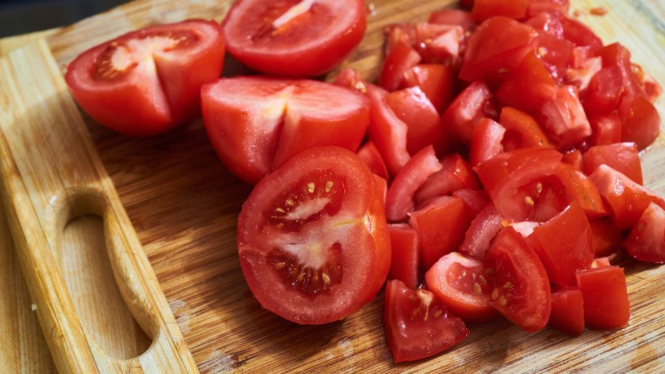

共働きの家庭では、仕事を終えて帰宅してから夕食を用意するまでの時間がとても限られています。献立を考え、買い物をして、下ごしらえから始めると、それだけで夜の時間の多くが過ぎてしまいます。「手作りのものを食べさせたいけれど、毎日は続かない」と感じている方も多いのではないでしょうか。
この記事では、共働き家庭がミールキットを選ぶときに見ておきたいポイントを、調理時間や家族の人数、受け取りやすさといった暮らしの条件から整理しました。どちらが料理を担当しても回せる仕組みづくりという視点も含めてまとめています。
共働き家庭向けのミールキットとは｜こんな人に向いています
ミールキットは、1回分の料理に必要な食材とたれ・調味料、レシピがセットになって届くサービスです。野菜がカット済みになっているものも多く、レシピどおりに炒めたり煮たりするだけで、主菜や副菜ができあがります。
温めるだけの宅配弁当とは違い、最後のひと手間は自分で行います。そのぶん、できたての料理を家族で囲めることや、量や味つけを少し調整できることが特徴です。
「献立を考える」「買い物に行く」「下ごしらえをする」という見えにくい家事をまとめて減らせるのが、ミールキットのいちばんの良さです。
- 帰宅後の時間が短い方：切る・量るといった準備が少なく、調理の時間を短くしやすくなります
- 献立を考えるのが負担な方：何を作るかを毎日決める必要がなくなり、気持ちの負担が軽くなります
- 夫婦で料理を分担したい方：レシピに沿って作るだけなので、普段料理をしない人でも担当しやすくなります
- 子どもに手作りの食事を出したい方：できたてを出せるので、家族の食卓らしさを保ちやすくなります
- 食材を余らせがちな方：必要な分だけ届くので、冷蔵庫で野菜を傷ませてしまうことが減ります
共働き家庭のミールキットの選び方｜失敗しない4つのポイント
1. 調理時間と工程の少なさ
共働き家庭にとって、ミールキット選びでいちばん大切なのは「平日の夜に無理なく作れるか」です。同じミールキットでも、カット済みの野菜が中心のものと、自分で切る工程が残るものとでは、手間が大きく変わります。
公式サイトでは、調理時間の目安や使う調理器具が案内されていることが多いです。フライパン1つで作れるか、主菜と副菜を同時に作れる段取りになっているかも見ておくと、実際の夜の流れをイメージしやすくなります。
2. 家族の人数と年齢に合うか
ミールキットは、2人前・3人前など人数ごとにセットが分かれていることが多いです。子どもがいる家庭では、大人と同じ量では多すぎたり、味つけが辛すぎたりすることもあります。
家族の人数に合うコースがあるか、子どもでも食べやすいメニューが選べるかを確認しておきましょう。小さな子どもがいる場合は、取り分けてから味を足せるメニューがあると使いやすくなります。
3. 受け取り方と保存期間
ミールキットは冷蔵で届くことが多く、冷凍の宅配弁当に比べると、届いてから使い切るまでの期間が短めです。共働きで日中留守にしがちな場合は、受け取りの方法がとても大切になります。
配達日や時間帯を指定できるか、置き配や保冷ボックスでの受け取りに対応しているかを確認しておきましょう。届いた日から何日以内に作ればよいかを把握し、週の前半に使うものと後半に使うものを分けて考えると、食材を無駄にしにくくなります。
4. 注文の決めやすさと休みやすさ
毎週メニューを選ぶ仕組みのサービスもあれば、おまかせで届くものもあります。選ぶ楽しさがある一方で、忙しい週は注文を考えること自体が負担になることもあります。
注文の締め切りがいつか、選び忘れたときにどうなるか、出張や帰省でスキップできるかを最初に確認しておくと安心です。家族の予定が読みにくい時期は、気軽にお休みできる仕組みがあるかどうかが続けやすさにつながります。
ポイント
迷ったときは、まずお試しセットで「平日の夜に、いつも料理をしない方の人が作れるか」を試してみるのがおすすめです。どちらが担当しても回せると分かれば、続けやすいサービスだと判断しやすくなります。
おすすめのミールキット・食材宅配を比較
できたての主菜と副菜を手早く作りたいならミールキット、食材を選んで自分で献立を組みたいなら食材宅配、作る余裕がない日のために備えたいなら冷凍の宅配食、という見方で比べると選びやすくなります。それぞれの特徴を下の表にまとめました。
おすすめサービス比較表
| サービス | 料金の目安 | タイプ（冷凍・冷蔵・キット） | 特徴 | 申込み |
|---|---|---|---|---|
| イチオシKit Oisix | 公式サイトで確認 | ミールキット | 主菜・副菜の2品が20分で作れる献立キット | 料金を見る |
| 2食材宅配のヨシケイ | 公式サイトで確認 | ミールキット | 栄養士の献立・7コースから選べるミールキット | 料金を見る |
| 3夕食.net シンプルミール | 配送無料 | 冷凍弁当 | 前日注文もできるヨシケイの冷凍宅配弁当（一部エリア） | 料金を見る |
※料金・内容は各社の公式情報・広告素材の記載をもとにした目安です（2026年10月時点）。最新の料金・条件は必ず公式サイトでご確認ください。
ミールキットと冷凍の宅配食を組み合わせて、「作る日」と「温めるだけの日」を分けている家庭もあります。毎日同じ形にこだわらず、その週の忙しさに合わせて使い分けると、負担を減らしやすくなります。
共働き家庭の上手な使い方

ミールキットは、毎日の夕食をすべて置き換えなくても十分に役立ちます。特に忙しくなりやすい曜日にだけ使うと、費用とのバランスもとりやすくなります。
- 忙しい曜日だけに使う：残業や習い事の送り迎えがある日にあてると、効果を感じやすくなります
- 作る人を決めておく：「この曜日はミールキットの日で、先に帰った方が作る」と決めると、分担が自然に進みます
- 汁物とごはんは別に用意する：ごはんを炊いておき、味噌汁を足すだけで献立が整います
- 届いた日に冷蔵庫を整理する：キットごとにまとめて置いておくと、作る人が迷わずに済みます
一般的に、ミールキットは1人前あたり数百円台から千円前後が目安です。人数やメニュー、送料の有無によって負担が変わるため、詳しくは公式サイトでご確認ください。
利用するときの注意点
注意
- 消費期限の確認：冷蔵で届くキットは期限が短めです。届いたら日付を確認し、早いものから作るようにしましょう
- 注文の締め切り：メニューの変更やスキップは、お届けの数日前までに手続きが必要なことが多いです
- 送料を含めた総額：1食分の価格だけでなく、送料や手数料を含めた金額で比べると、外食や総菜との比較がしやすくなります
- 配送エリア：地域によっては届かない、または配達日が限られる場合があります。申し込む前に対応エリアを確認しておきましょう
注意
食物アレルギーのある家族がいる場合は、メニューごとの原材料やアレルギー表示を注文の前に確認してください。同じ工場で扱っている原材料についての案内も、公式サイトで確かめておくと安心です。
よくある質問
ミールキットと宅配弁当は、どちらが共働き家庭に向いていますか？
家族でできたての食事をとりたい、少しは自分で作りたいという場合はミールキット、調理の時間がまったく取れない日が多い場合は宅配弁当が向いています。両方を組み合わせて使う方法もあります。
料理が苦手でも作れますか？
多くのミールキットは、レシピの手順に沿って作れば仕上がるように工夫されています。まずは調理時間が短めのメニューから試すと、慣れやすくなります。
子どもが食べられるメニューはありますか？
子ども向けや家族向けのメニューを用意しているサービスもあります。辛さや量の調整がしやすいかどうかは、メニュー表やレシピで事前に確かめておくと安心です。
途中でお休みしたり、やめたりできますか？
多くのサービスでスキップや休止、解約ができますが、手続きの方法や締め切りはサービスごとに異なります。申し込む前に、各社の公式サイトで条件をご確認ください。
まとめ
この記事のポイント
- 共働き家庭のミールキットは、平日の夜に無理なく作れる調理時間と工程かどうかを最初に見る
- 家族の人数や年齢、受け取り方と保存期間、注文の決めやすさを比べると、続けやすいサービスが見つけやすい
- 忙しい曜日だけに使う、作る人を決めておくなど、家庭の流れに合わせて取り入れると負担が軽くなる
夕食づくりを毎日きちんとこなせなくても、それは誰かが頑張りきれていないということではありません。まずはお試しセットから、家族の暮らしに合うかどうかをゆっくり確かめてみてください。